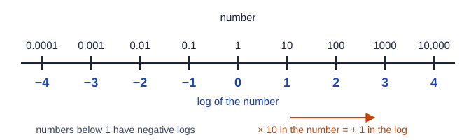

A logarithm is an exponent
You already know that 10³ = 1000. A logarithm asks the same question backwards: "10 to what power gives 1000?" The answer, 3, is the base-10 logarithm of 1000, written log 1000 = 3.
| Number | As a power of ten | log |
|---|---|---|
| 1,000,000 | 10⁶ | 6 |
| 1000 | 10³ | 3 |
| 1 | 10⁰ | 0 |
| 0.001 | 10⁻³ | −3 |
| 0.00001 | 10⁻⁵ | −5 |
Three things follow. Numbers above 1 have positive logs; numbers between 0 and 1 have negative logs; and zero and negative numbers have no log at all, because 10 raised to any power is positive (Figure 1).

Logs of numbers that are not powers of ten
Most numbers sit between powers of ten. 3.2 is between 10⁰ and 10¹, so its log is between 0 and 1: log 3.2 = 0.505. Your calculator's LOG key does this. For a number in scientific notation, the log splits neatly into two parts:
log (3.2 × 10⁻⁴) = log 3.2 + log 10⁻⁴ = 0.505 + (−4) = −3.495
The whole-number part (−4 here, after combining) only places the decimal point; the digits after the decimal point carry the measured information.
The rules
Because logs are exponents, the exponent rules become log rules:
| Rule | Example | From the exponent rule |
|---|---|---|
| log (A × B) = log A + log B | log 200 = log 2 + log 100 = 0.301 + 2 | multiplying adds exponents |
| log (A ÷ B) = log A − log B | log (1/1000) = 0 − 3 = −3 | dividing subtracts exponents |
| log (Aⁿ) = n log A | log (10²)³ = 3 × 2 = 6 | a power of a power multiplies |
The first rule is the reason logs are useful: a factor of 10 adds exactly 1 to the log, and a factor of 1000 adds 3. A quantity that changes by a factor of a billion changes its log by only 9.
The natural logarithm
A logarithm can use a base other than 10. The most important one in science is e, about 2.718, which shows up whenever something grows or decays at a rate set by how much of it there is. The log with base e is the natural logarithm, written ln.
ln and log follow the same rules but give different numbers. Since ln 10 = 2.303, every natural log is 2.303 times the base-10 log of the same number: ln x = 2.303 log x. The exam's readers see students use the wrong one every year, especially in equations later in the course. If an equation says ln, press LN; if it says log, press LOG.
Worked example. Calculate log (4.7 × 10⁻³) and ln (4.7 × 10⁻³).
LOG key: log (4.7 × 10⁻³) = −2.328, written −2.33.
LN key: ln (4.7 × 10⁻³) = −5.360, written −5.36.
Check: −2.328 × 2.303 = −5.36. The two answers differ by the factor 2.303, as they should.
Undoing a log: the antilog
To get a number back from its log, raise the base to that power. This is the antilog. On most calculators it is the second function of the LOG key (10ˣ) or of the LN key (eˣ).
Worked example. If log x = 2.45, what is x?
x = 10^2.45 = 281.8. The log had two decimal places, so x has two significant figures: x = 2.8 × 10².
If instead ln y = −0.25, then y = e^(−0.25) = 0.78.
Solving an equation with ln works the same way: raise e to both sides. If ln (A/B) = −kt, then A/B = e^(−kt), and A = B e^(−kt).
Significant figures in logs
For a logarithm, the digits after the decimal point are its significant figures. The whole-number part only reflects the power of ten. So the rule is: the number of decimal places in the log equals the number of significant figures in the original number.
- log (3.2 × 10⁻⁴) = −3.49 (two significant figures in 3.2, two decimal places).
- log (3.20 × 10⁻⁴) = −3.495 (three significant figures, three decimal places).
- Going back, 10^2.45 = 2.8 × 10² (two decimal places, two significant figures).